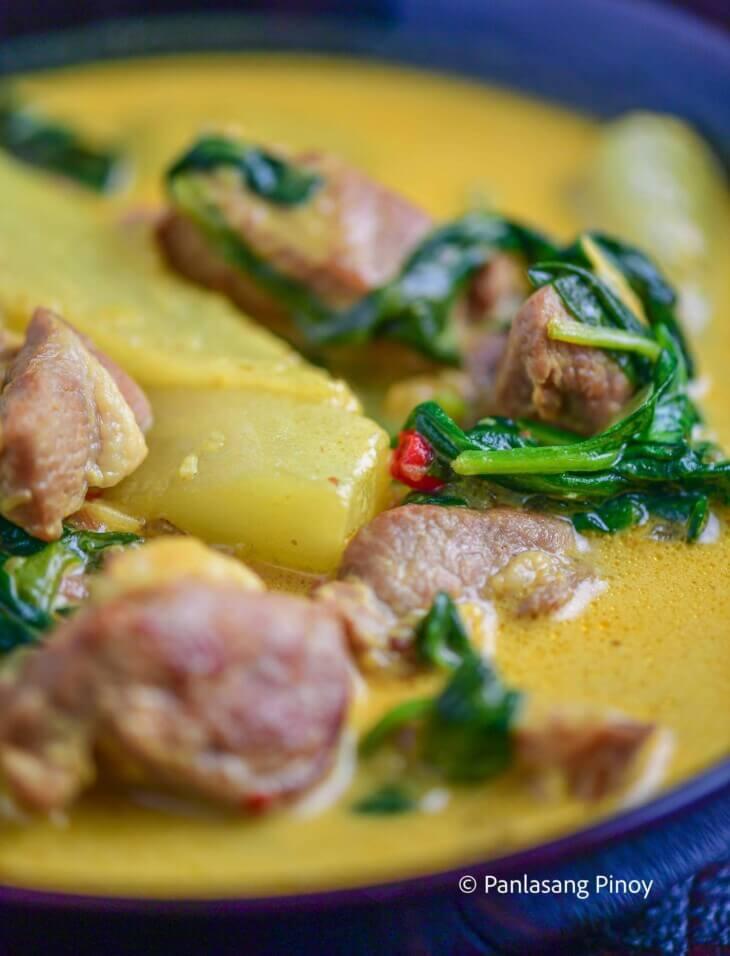

TINOLA

Description
Pork Curry Tinola is a rich, colorful fusion of two well-loved dishes. I’m talking about the savory, velvety Curry,
and the healthy, comforting Tinola. While they both belong on the stew end of recipes, they are pretty different
when it comes to flavors.
Ingredients
- 1 ½ lb. pork shoulder cubed
- 1 Knorr Pork Cube
- 1 green papaya wedged
- 1 ½ wedged
- 1 ½ spinach
- 2 cups coconut milk
- 1 ½ cups water
- ½ teaspoon curry powder
- 2 tespoons tumeric powder
- 1 onion chopped
- 2 thumbs ginger chopped
- 5 cloves garlic chopped
- 5 pieces Thai chili pepper
- Fish sauce to taste
Instructions
- Heat oil in a pan. Sauté garlic, onion, and ginger.
- Once the onion softens, add the pork. Cook it while stirring occasionally until the color of the outer part
turns light brown.
- Add chili garlic oil and Knorr Pork Cube. Stir.
- Pour the coconut milk. Cover the pan. Let boil. Continue cooking for 20 minutes using between low to medium
heat.
- Pour water into the pan. Cover and let it boil. Adjust the stove to the lowest setting. Continue cooking until
the pork becomes tender.
- Add green papaya. Cook in low heat for 7 to 10 minutes.
- Add curry powder and turmeric powder.
- Season with fish sauce and add chili peppers and spinach. Cover the pan and cook for 2 minutes.
- Serve warm. Share and enjoy!